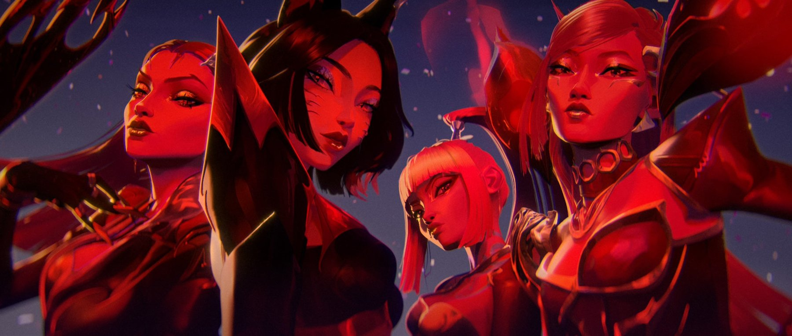
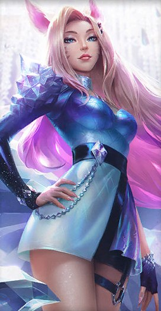
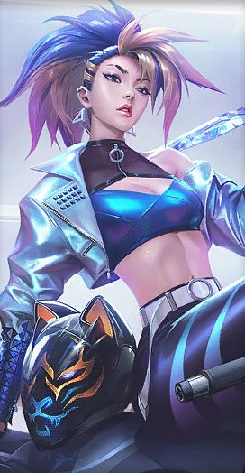
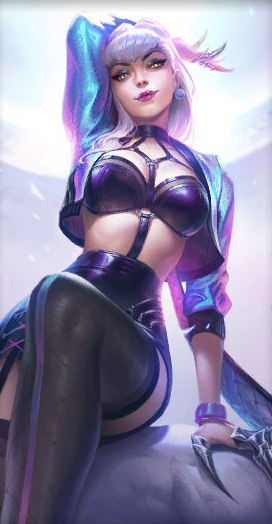
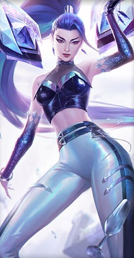
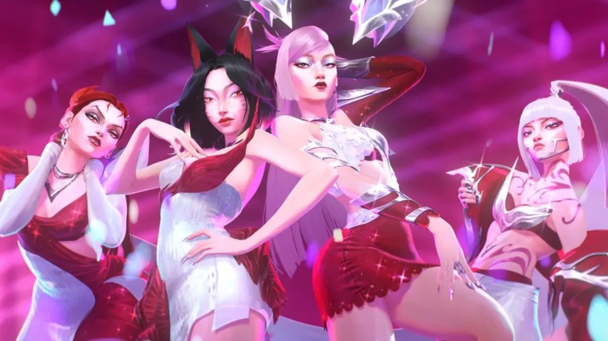

MIYEON
Ahri · i-dle
Vocalista de i-dle y voz de Ahri desde POP/STARS. El hilo que conecta 2018 con el regreso.
Volvieron. Después de seis años, Ahri, Akali, Evelynn y Kai'Sa regresaron con FIRESTARTER, un EP de cuatro canciones y una actuación confirmada en Worlds 2026. Sigue siendo el mejor motivo para subir el volumen.
2018 Debut con POP/STARS
2020 EP ALL OUT
2026 Regreso con FIRESTARTER

Cuatro pistas nuevas, un videoclip dirigido por Fortiche —los mismos de Arcane— y 9,2 millones de reproducciones en las primeras 24 horas. El grupo vuelve con MIYEON y SOYEON de i-dle, Sophie Powers y Mimi Webb.
6años de espera
4canciones nuevas
9,2 Mreproducciones en 24 h
2.700millones de streams
FIRESTARTER no salió de la nada: hay un estudio de animación, una cabina que llevaba once años apagada y un escenario de Worlds esperando. Estas son las piezas que sostienen el regreso.
Seis años de silencio y el primer acorde lo dice todo.
La era FIRESTARTER · 2026
Fortiche, el estudio detrás de Arcane, firma el videoclip. Pintura, 3D y el pulso visual que ya es marca de la casa.
DJ Sona vuelve a la cabina once años después para GIRLS, con Sorana y Royal & The Serpent al micro.
El 14 de noviembre, K/DA y True Damage abren la ceremonia de Worlds 2026 en el Barclays Center de Brooklyn.
Los avatares son K/DA; las voces son de carne y hueso. MIYEON y SOYEON repiten, Sophie Powers y Mimi Webb se estrenan. Estas son las cuatro voces principales de FIRESTARTER.
Ahri · i-dle
Vocalista de i-dle y voz de Ahri desde POP/STARS. El hilo que conecta 2018 con el regreso.
Akali · i-dle
Rapera, compositora y líder de i-dle. La firma rítmica de Akali desde 2018.
Evelynn · Canadá
Artista canadiense de alt-pop. Debuta como Evelynn y le pone filo al lado más oscuro del grupo.
Kai'Sa · Reino Unido
Cantante británica. Debuta como Kai'Sa y aporta el pulso pop que empuja el EP hacia la pista.
También en el cancionero: Lexie Liu, Jaira Burns y Seraphine en MORE; Sorana y Royal & The Serpent en GIRLS.
Cuatro personajes, cuatro formas de ocupar el escenario. Ahri abre el show, Akali rompe el compás, Evelynn baja la temperatura y Kai'Sa no deja que nadie se quede quieto.

Líder y voz
Nueve colas, una entrada triunfal y la voz que presenta al grupo.

Rap
La kunoichi que llega tarde a propósito y se lleva la mejor parte del beat.

Voz
Dulce hasta que abre la boca. Su registro grave es el gancho de cada coro.

Baile y voz
Criada en el Vacío, criada para el escenario. Nadie marca mejor el compás.
Seraphine también es parte de la era ALL OUT: canta en MORE y tiene su propia skin de K/DA.
Diez canciones, tres eras y ninguna razón para parar. Los cuatro cortes de FIRESTARTER están arriba; abre cualquier título para leer la nota.
El regreso: seis años de silencio, un videoclip de Fortiche y un estribillo que prende fuego a la vieja fórmula.
Evelynn y Kai'Sa se quedan con el foco. Sophie Powers y Mimi Webb se reparten un himno de pasarela.
Solo Ahri y Akali, con MIYEON y SOYEON. Un corte que mira al futuro sin pedir perdón.
DJ Sona vuelve a la cabina once años después. Sorana y Royal & The Serpent ponen las voces del cierre más bailable.
El debut que rompió el internet: glitch pop, coros de estadio y un videoclip que se volvió himno de Worlds.
El primer adelanto de ALL OUT: menos azúcar, más trap y una pasarela entera de cromo.
La carta de presentación de ALL OUT, con Lexie Liu, Jaira Burns y Seraphine. Cuerdas sintéticas y un estribillo que no pide permiso.
Oscura y teatral: sintetizadores de película de terror y un estribillo con colmillos.
Percusión de taller y un coro que suena a estadio a reventar. El cierre de fiesta de 2020.
El lado melódico de ALL OUT, con Annika Wells al micro. La balada que faltaba en el repertorio.

En 2018, cuatro campeonas subieron a un escenario virtual para estrenar POP/STARS en la final de Worlds. En 2020, ALL OUT convirtió el experimento en franquicia. En 2026, FIRESTARTER las devuelve a la ceremonia de apertura, esta vez en el Barclays Center de Nueva York y junto a True Damage.
Entre medias, más de 2.700 millones de reproducciones, un EP y la certeza de que un grupo virtual puede tener mejor directo que muchas bandas reales.
POP/STARS debuta en la final de Worlds y convierte a cuatro campeonas en estrellas del pop.
ALL OUT suma cinco canciones, dos sencillos y la colaboración con Seraphine.
FIRESTARTER rompe seis años de silencio y K/DA vuelve a abrir un Mundial.
14 de noviembre de 2026 · Barclays Center, Nueva York
FIRESTARTER ya está en todas las plataformas y K/DA vuelve al escenario el 14 de noviembre. Hasta entonces, el EP en bucle.